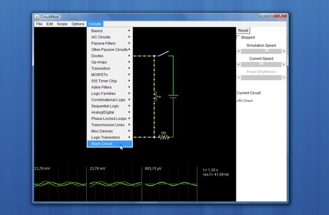
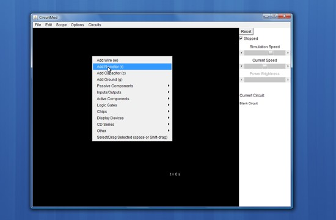
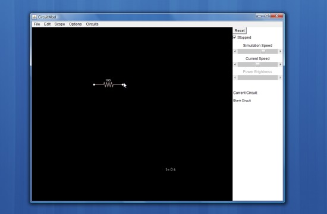
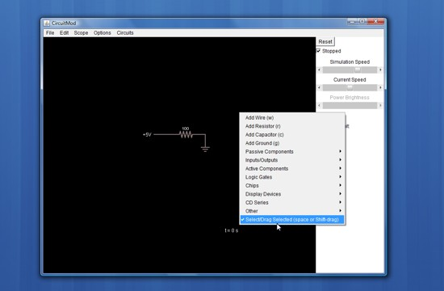
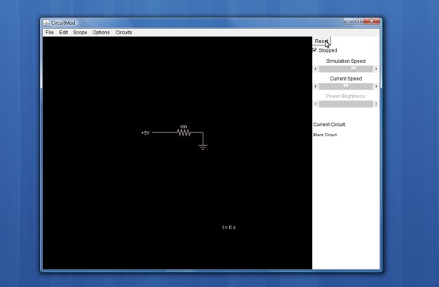
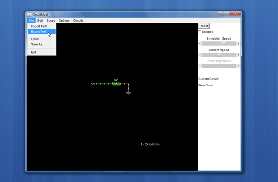
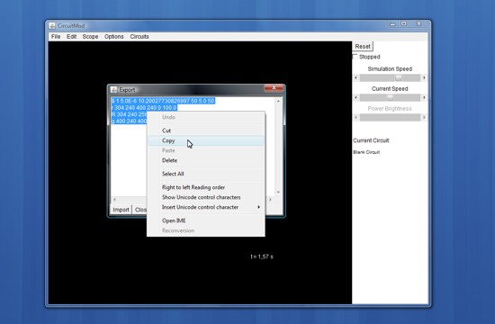

1) Start

Select menu "Circuits" and click over a preinstalled circuit. You can add your circuit to this menu later.
2) Blank
For startup your own circuit, Select menu "Circuit" -> Blank Circuit at bottom. Click "Reset" checkbox at top right for edit circuit.
3) Right Click
Now you can make right click over blackboard to add components.
4) Drag
Click and Drag to positioning the components. Repeat step 3 and 4 for add more components and connect between with Wire(w) to complete the circuit. Right click over components for adjust values.
5) Select
Right click and select "Select/Drag Selected", Click and Drag over blackboard to select all components and move everywhere.
6) Reset
When complete, Click "Reset" button at top/right to start circuit
7) Export
The circuit is On. Now you can click menu "File"->"Export Text" for save circuit for later.
8) Copy and Share
Copy the text with right click -> copy over the text selected. Now, you can save with the Notepad to your HardDrive or share in forums, webpages, internet, emails, etc.